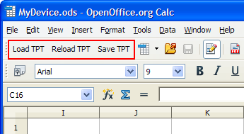

OpenOffice spreadsheet for editing the CSV files
Each test program template created by STPM includes an OpenOffice spreadsheet (.ods) that lets you edit the CSV files containing the test program information.
The spreadsheet contains custom controls to allow you to load and save the CSV files.
Controls

STPM adds controls to the upper left corner of the spreadsheet (see graphic above):
- Load TPT: Clicking this button lets you load a set of CSV
files.
Select the desired TPT master file in the Open dialog; the spreadsheet loads the CSV files referenced in it.
- Reload TPT: Clicking this button reloads the information from the
last loaded set of CSV files.
Note that this overwrites any changes you may have made.
- Save TPT: Clicking this button saves the current state of the spreadsheets to the corresponding CSV files.
Sheets
Each sheet in the OpenOffice document contains one of the imported CSV tables described in Test program template files.
Columns
For descriptions of the table columns, see the documentation of the CSV file containing the column in Test program template files.
Several of the columns have drop-down lists from which you can choose appropriate values:
- Test suite table
- Test Flags
- Bin table
- Type
- Color
- Reprobe
- Overon
- Test table
- Test Suite Name
- Test Stage
- SBin
- Lower Op
- Upper Op
- Source
- Test parameter table
- Test Suite Name
- Test flag table
- Each column representing a flag
- Test stage table
- Type
Functional changes
- Introduced in SmarTest 7.0.4
- SmarTest 7.2.1: Update the list of columns with drop-down lists.